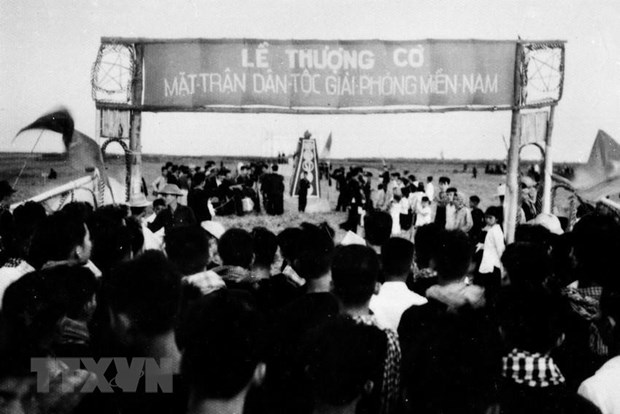
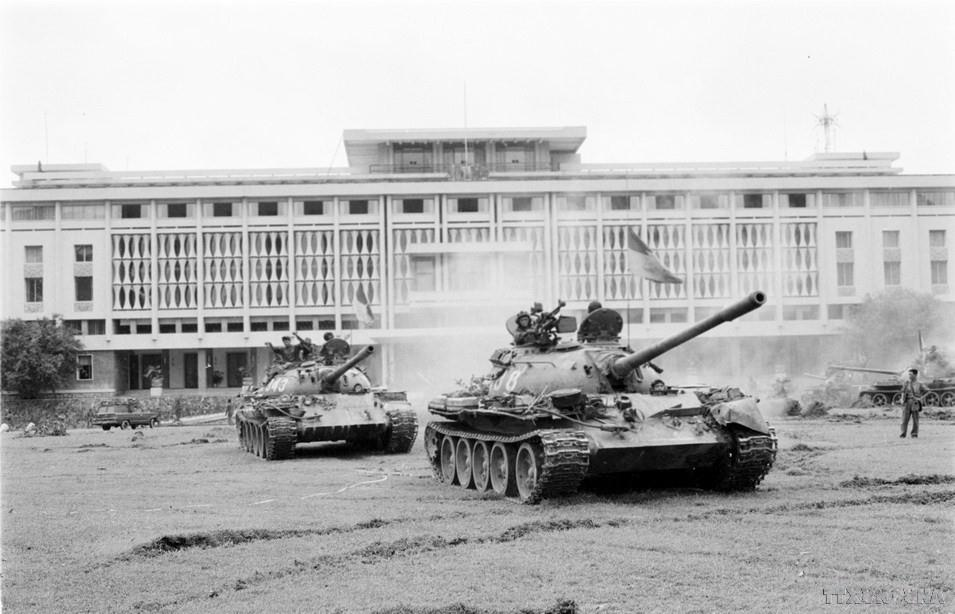

Ngày lễ trọng đại 30 tháng 4
Ngày 30/4/1975 là mốc son chói lọi trong lịch sử dân tộc Việt Nam – ngày miền Nam được hoàn toàn giải phóng, đất nước thống nhất, non sông thu về một mối dưới sự lãnh đạo của Đảng Cộng sản Việt Nam và Chủ tịch Hồ Chí Minh.
Chiến thắng lịch sử này đã chấm dứt ách thống trị của đế quốc Mỹ và chính quyền tay sai ở miền Nam, kết thúc 30 năm chiến tranh giải phóng dân tộc, mở ra kỷ nguyên mới: kỷ nguyên độc lập, thống nhất và đi lên xây dựng chủ nghĩa xã hội.
Đó là thắng lợi của ý chí kiên cường, của lòng yêu nước, tinh thần đoàn kết toàn dân tộc và sự hy sinh to lớn của hàng triệu anh hùng liệt sĩ, đồng bào, chiến sĩ trên khắp mọi miền Tổ quốc.
Hằng năm, vào dịp 30/4, nhiều hoạt động kỷ niệm được tổ chức nhằm ôn lại truyền thống lịch sử hào hùng của dân tộc, đồng thời giáo dục lòng yêu nước và trách nhiệm công dân cho thế hệ trẻ.
Hoạt động góp phần bồi đắp đạo lý “Uống nước nhớ nguồn”.
Qua đó góp phần tuyên truyền lịch sử và khơi dậy niềm tự hào dân tộc.
Góp phần củng cố tinh thần đoàn kết và truyền thống tốt đẹp của dân tộc.